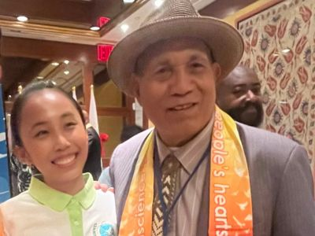
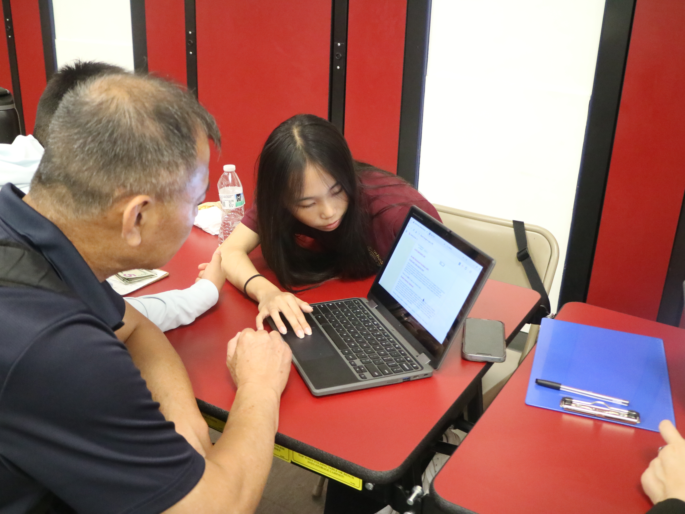
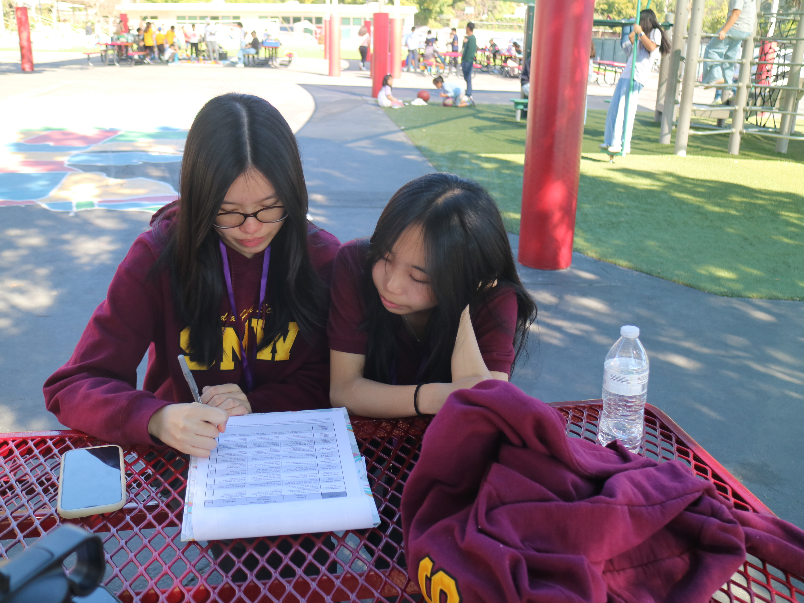
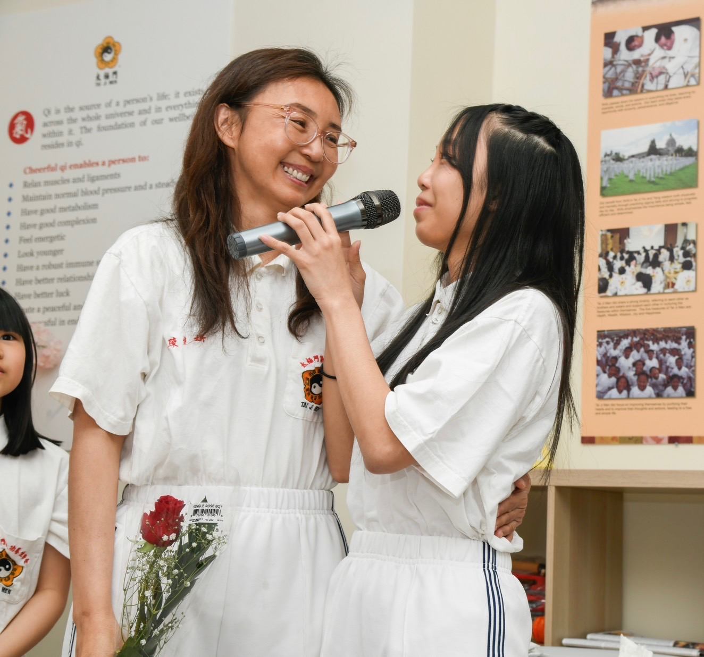
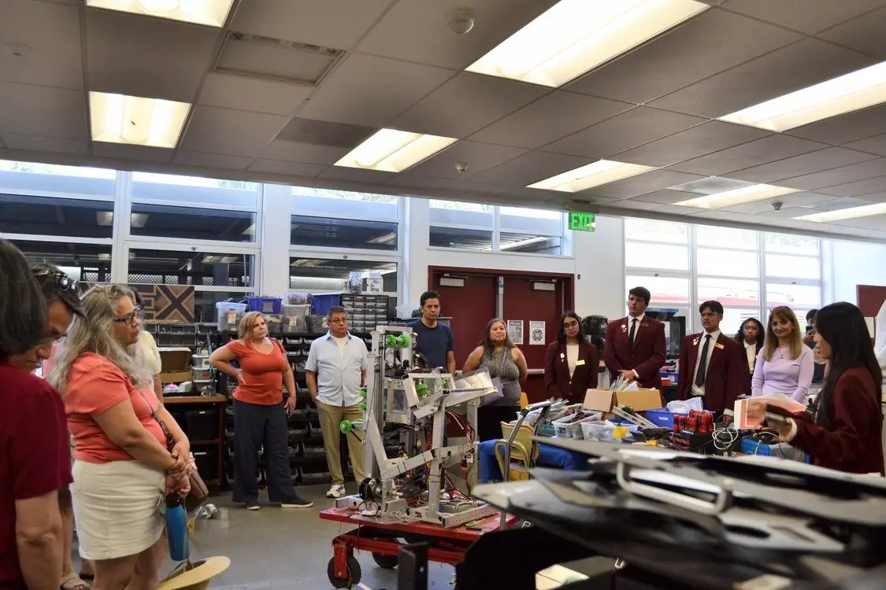

works / civic
civic portfolio
🫂 Speech at the United Nations
A screen recording from UN Web TV
From starting as an intern for the NGO, FOWPAL, to being selected to write and pitch the draft resolution of the International Day of Transparency and Integrity, I learned that speaking from the heart is the best way to speak authentically and connect with others.
🌎 Global Leaders
Pictures with heads of state & permanent representatives to the UN
As a youth volunteer for FOWPAL, I had to privilege to be an assistant and interpreter for various events. There, I met many high profile and inspiring leaders who I felt deeply connected to and became friends with.

🤝 Volunteer Work
Volunteering with Arcadia High SMW & Tai Ji Men Qigong Academy
In senior year of high school, I joined the senior volunteering organization Seniors of Merit at Work, and volunteered for local organizations and schools. I aided in events such as the USC Crystal Ball, Magikid Robotics Competitions, and High School Reunions. Moreover, I also spend my time volunteering for the Tai Ji Men Qigong Academy, where I help set up events, make treats, and guide guests.



